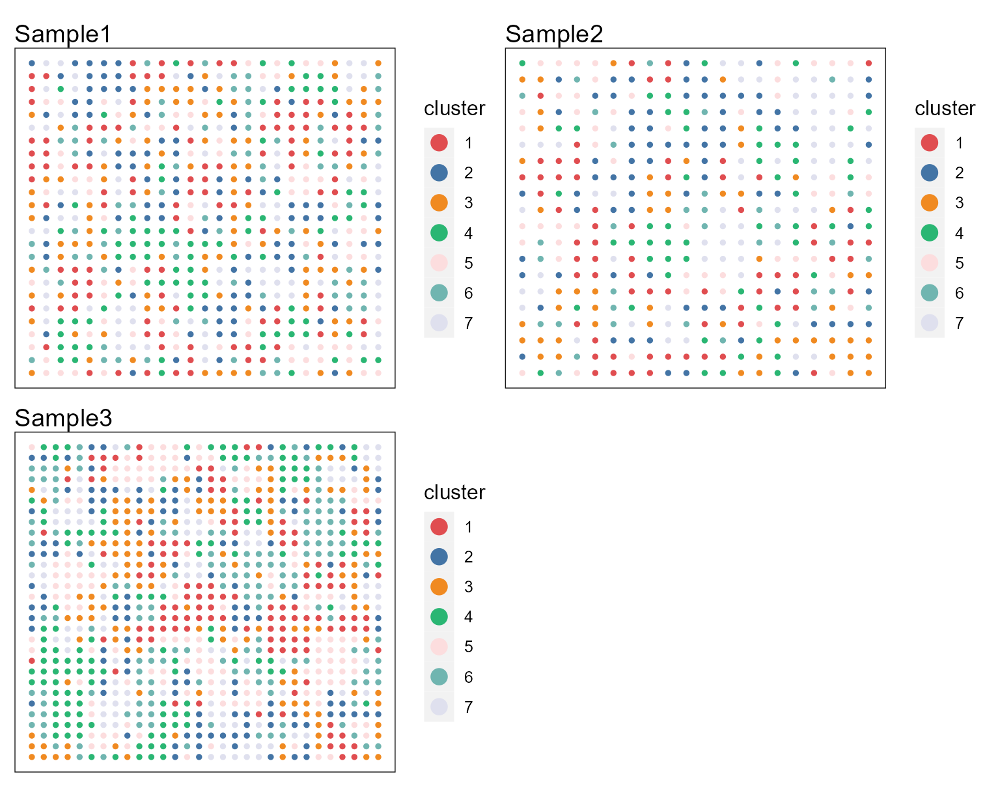
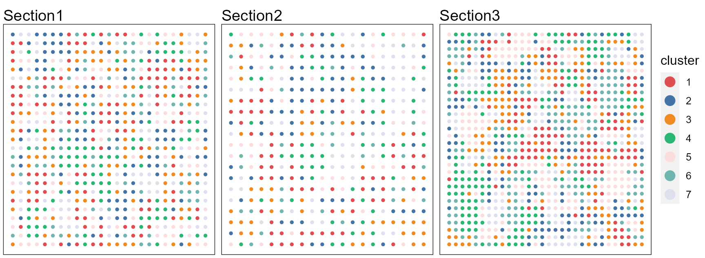
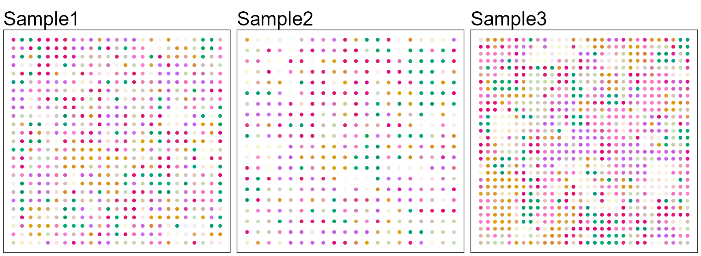
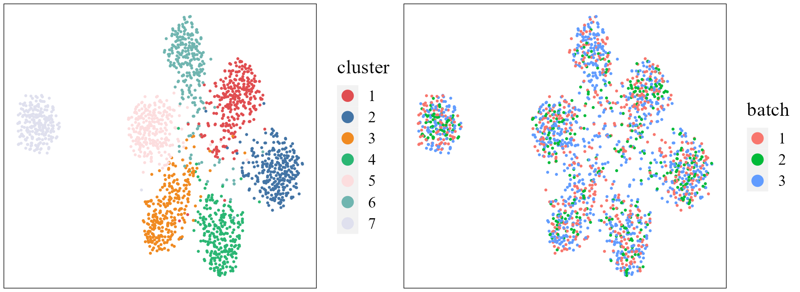
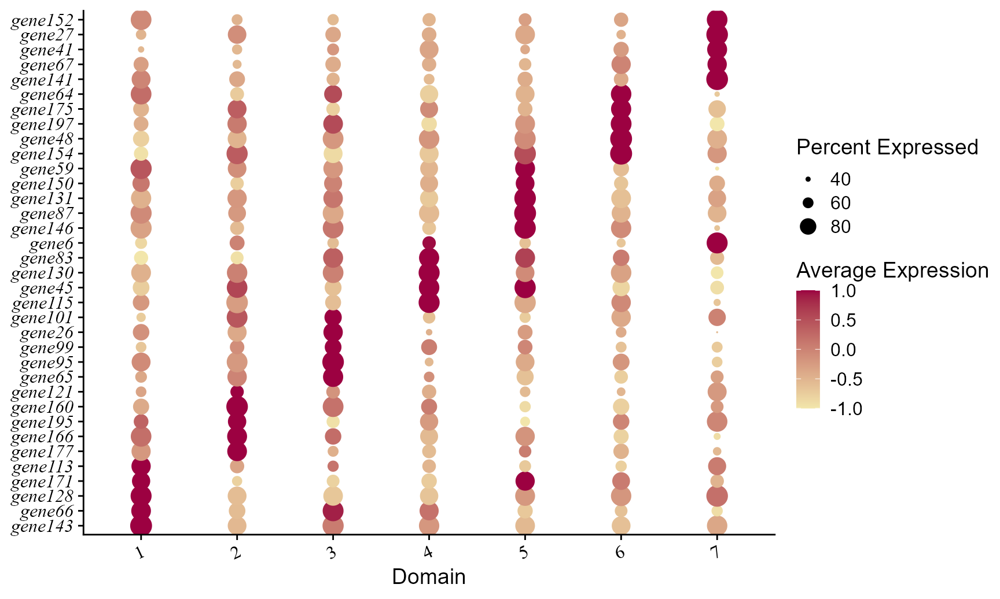

This vignette introduces the ProFAST workflow for the analysis of multiple simulated spatial transcriptomics dataset. ProFAST workflow is based on the PRECASTObj object created in the PRECAST R package and the workflow of ProFAST is similar to that of PRECAST; see (https://feiyoung.github.io/PRECAST/articles/PRECAST.BreastCancer.html) for the workflow of PRECAST. The workflow of ProFAST consists of three steps
- Independent preprocessing and model setting
- Spatial dimension reduction using ProFAST
- Downstream analysis (i.e. , embedding alignment using Harmony and clustering using Louvain, visualization of clusters and embeddings, remove unwanted variation, combined differential expression analysis)
- Except for the above downstream analyses, cell-cell interaction analysis and trajectory inference can also be performed on the basis of the embeddings obtained by ProFAST.
We demonstrate the use of ProFAST to three simulated ST data that are here, which can be downloaded to the current working path by the following command:
githubURL <- "https://github.com/feiyoung/ProFAST/blob/main/vignettes_data/simu3.rda?raw=true"
download.file(githubURL,"simu3.rds",mode='wb')Then load to R
load("simu3.rds")The package can be loaded with the command:
library(ProFAST)
library(PRECAST)
#> Loading required package: parallel
#> Loading required package: gtools
#> PRECAST : An efficient data integration method is provided for multiple spatial transcriptomics data with non-cluster-relevant effects such as the complex batch effects. It unifies spatial factor analysis simultaneously with spatial clustering and embedding alignment, requiring only partially shared cell/domain clusters across datasets. More details can be referred to Wei Liu, et al. (2023) <doi:10.1038/s41467-023-35947-w>. Check out our Package website (https://feiyoung.github.io/PRECAST/index.html) for a more complete description of the methods and analyses
library(Seurat)
#> Warning: package 'Seurat' was built under R version 4.1.3
#> Attaching SeuratObject
#> Attaching spView the simulated data
First, we view the the three simulated spatial transcriptomics data with ST platform. There are 200 genes for each data batch and ~2000 spots in total
simu3 ## a list including three Seurat object with default assay: RNA
#> [[1]]
#> An object of class Seurat
#> 200 features across 625 samples within 1 assay
#> Active assay: RNA (200 features, 0 variable features)
#>
#> [[2]]
#> An object of class Seurat
#> 200 features across 400 samples within 1 assay
#> Active assay: RNA (200 features, 0 variable features)
#>
#> [[3]]
#> An object of class Seurat
#> 200 features across 900 samples within 1 assay
#> Active assay: RNA (200 features, 0 variable features)Check the content in simu3.
head(simu3[[1]])
row.names(simu3[[1]])[1:10]Create a PRECASTObject object
We show how to create a PRECASTObject object step by step. First, we create a Seurat list object using the count matrix and meta data of each data batch. Although simu3 is a prepared Seurat list object, we re-create a same objcet seuList to show the details.
- Note: the spatial coordinates must be contained in the meta data and named as
rowandcol, which benefits the identification of spaital coordinates by ProFAST
## Get the gene-by-spot read count matrices
countList <- lapply(simu3, function(x) x[["RNA"]]@counts)
## Check the spatial coordinates: Yes, they are named as "row" and "col"!
head(simu3[[1]]@meta.data)
#> orig.ident nCount_RNA nFeature_RNA row col Group
#> spot1 SeuratProject 130934 114 1 1 Layer4
#> spot2 SeuratProject 3103 116 2 1 Layer6
#> spot3 SeuratProject 8112 110 3 1 Layer6
#> spot4 SeuratProject 2637 105 4 1 Layer6
#> spot5 SeuratProject 5664 109 5 1 Layer5
#> spot6 SeuratProject 4636 107 6 1 Layer6
## Get the meta data of each spot for each data batch
metadataList <- lapply(simu3, function(x) x@meta.data)
## ensure the row.names of metadata in metaList are the same as that of colnames count matrix in countList
M <- length(countList)
for(r in 1:M){
row.names(metadataList[[r]]) <- colnames(countList[[r]])
}
## Create the Seurat list object
seuList <- list()
for(r in 1:M){
seuList[[r]] <- CreateSeuratObject(counts = countList[[r]], meta.data=metadataList[[r]], project = "ProFASTsimu")
}Prepare the PRECASTObject with preprocessing step.
Next, we use CreatePRECASTObject() to create a PRECASTObject object based on the Seurat list object seuList. Users are able to see https://feiyoung.github.io/PRECAST/articles/PRECAST.BreastCancer.html for what is done in this function. Since this is a simulated dataset, we used all the 200 genes by using a custom gene list customGenelist=custom_genelist). We observe that there are only 197 genes passing the filtering step.
## Create PRECASTObject
custom_genelist <- row.names(seuList[[1]])
set.seed(2023)
PRECASTObj <- CreatePRECASTObject(seuList, customGenelist=custom_genelist)
#> Filter spots and features from Raw count data...
#>
#>
#> CreatePRECASTObject: remove genes:gene90 gene144 gene170 with low count reads in seuList.
#> Filter spots and features from SVGs(HVGs) count data...
## User can retain the raw seuList by the following commond.
## PRECASTObj <- CreatePRECASTObject(seuList, customGenelist=row.names(seuList[[1]]), rawData.preserve = TRUE)
## check the number of genes/features after filtering step
PRECASTObj@seulist
#> [[1]]
#> An object of class Seurat
#> 197 features across 625 samples within 1 assay
#> Active assay: RNA (197 features, 0 variable features)
#>
#> [[2]]
#> An object of class Seurat
#> 197 features across 400 samples within 1 assay
#> Active assay: RNA (197 features, 0 variable features)
#>
#> [[3]]
#> An object of class Seurat
#> 197 features across 900 samples within 1 assay
#> Active assay: RNA (197 features, 0 variable features)Fit PRECAST using simulated data
Add the model setting
Add adjacency matrix list and parameter setting of ProFAST. More model setting parameters can be found in model_set_ProFAST().
## seuList is null since the default value `rawData.preserve` is FALSE.
PRECASTObj@seuList
#> NULL
## Add adjacency matrix list for a PRECASTObj object to prepare for ProFAST model fitting.
PRECASTObj <- AddAdjList(PRECASTObj, platform = "ST")
#> Neighbors were identified for 625 out of 625 spots.
#> Neighbors were identified for 400 out of 400 spots.
#> Neighbors were identified for 900 out of 900 spots.
## Add a model setting in advance for a PRECASTObj object: verbose =TRUE helps outputing the information in the algorithm;
PRECASTObj <- AddParSettingProFAST(PRECASTObj, verbose=TRUE)
## Check the parameters
PRECASTObj@parameterList
#> $maxIter
#> [1] 30
#>
#> $seed
#> [1] 1
#>
#> $epsLogLik
#> [1] 1e-05
#>
#> $verbose
#> [1] TRUE
#>
#> $error_heter
#> [1] TRUE
#>
#> $Psi_diag
#> [1] FALSEFit ProFAST
For function ProFAST, users can specify the number of factors q and the fitted model fit.model. The q sets the number of spatial factors to be extracted, and a lareger one means more information to be extracted but higher computaional cost. The fit.model specifies the version of ProFAST to be fitted. The Gaussian version (gaussian) models the log-count matrices while the Poisson verion (poisson) models the count matrices; default as poisson.
### set q= 20 here
set.seed(2023)
PRECASTObj <- ProFAST(PRECASTObj, q=20)
#> ******Run the Poisson version of ProFAST...
#> Loading required package: irlba
#> Loading required package: Matrix
#> Finish variable initialization
#> Satrt ICM step!
#> iter = 2, ELBO= 189481969.596825, dELBO=1.088234
#> Satrt ICM step!
#> iter = 3, ELBO= 208013944.617564, dELBO=0.097803
#> Satrt ICM step!
#> iter = 4, ELBO= 208041974.387419, dELBO=0.000135
#> Satrt ICM step!
#> iter = 5, ELBO= 208057832.422356, dELBO=0.000076
#> Satrt ICM step!
#> iter = 6, ELBO= 208067869.378179, dELBO=0.000048
#> Satrt ICM step!
#> iter = 7, ELBO= 208074731.784015, dELBO=0.000033
#> Satrt ICM step!
#> iter = 8, ELBO= 208079699.135512, dELBO=0.000024
#> Satrt ICM step!
#> iter = 9, ELBO= 208083457.759797, dELBO=0.000018
#> Satrt ICM step!
#> iter = 10, ELBO= 208086403.143739, dELBO=0.000014
#> Satrt ICM step!
#> iter = 11, ELBO= 208088775.191483, dELBO=0.000011
#> Satrt ICM step!
#> iter = 12, ELBO= 208090727.539180, dELBO=0.000009
#> 2023-06-04 17:20:38 : ***** Finish ProFAST, 0.086 mins elapsed.
### Check the results
str(PRECASTObj@resList)
#> List of 1
#> $ ProFAST:List of 7
#> ..$ hV :List of 3
#> .. ..$ : num [1:625, 1:15] -3.14 -4.92 -7.39 -2.64 -2.6 ...
#> .. ..$ : num [1:400, 1:15] -9.35 -3.52 -1.85 -5.17 -7.29 ...
#> .. ..$ : num [1:900, 1:15] -2.61 -5.68 -4.25 -8.76 -6.06 ...
#> .. ..- attr(*, "dim")= int [1:2] 3 1
#> ..$ nu : num [1:3, 1:197] 1.215 4.362 -0.1 -0.245 -0.606 ...
#> ..$ Psi : num [1:15, 1:15, 1:3] 29.685 3.493 -0.744 -2.433 -0.368 ...
#> ..$ W : num [1:197, 1:15] 0.16046 -0.07676 -0.08422 -0.00717 -0.03362 ...
#> ..$ Lam : num [1:3, 1:197] 1.84 2.4 1.14 1.61 1.12 ...
#> ..$ ELBO : num 2.08e+08
#> ..$ ELBO_seq: num [1:11] -2.15e+09 1.89e+08 2.08e+08 2.08e+08 2.08e+08 ...Evaluate the adjusted McFadden’s pseudo R-square
Next, we investigate the performance of dimension reduction by calculating the adjusted McFadden’s pseudo R-square for each data batch. The simulated true labels is in the meta.data of each component of PRECASTObj@seulist.
## Obtain the true labels
yList <- lapply(PRECASTObj@seulist, function(x) x$Group)
### Evaluate the MacR2
MacVec <- sapply(1:length(PRECASTObj@seulist), function(r) get_r2_mcfadden(PRECASTObj@resList$ProFAST$hV[[r]], yList[[r]]))
#> # weights: 119 (96 variable)
#> initial value 1216.193843
#> iter 10 value 136.386643
#> iter 20 value 96.309683
#> iter 30 value 86.964583
#> iter 40 value 83.075516
#> iter 50 value 80.851663
#> iter 60 value 79.354351
#> iter 70 value 78.664113
#> iter 80 value 78.019780
#> iter 90 value 77.845920
#> iter 100 value 77.780941
#> final value 77.780941
#> stopped after 100 iterations
#> # weights: 119 (96 variable)
#> initial value 778.364060
#> iter 10 value 85.678029
#> iter 20 value 43.657504
#> iter 30 value 29.521611
#> iter 40 value 22.595737
#> iter 50 value 14.568658
#> iter 60 value 1.436631
#> iter 70 value 0.003170
#> iter 80 value 0.000205
#> final value 0.000059
#> converged
#> # weights: 119 (96 variable)
#> initial value 1751.319134
#> iter 10 value 169.782995
#> iter 20 value 142.819546
#> iter 30 value 126.174504
#> iter 40 value 118.356166
#> iter 50 value 114.895200
#> iter 60 value 113.806101
#> iter 70 value 113.605023
#> iter 80 value 113.501592
#> iter 90 value 113.441868
#> iter 100 value 113.284082
#> final value 113.284082
#> stopped after 100 iterations
### output them
print(MacVec)
#> adjusted McFadden's R2 adjusted McFadden's R2 adjusted McFadden's R2
#> 0.9348547 0.9986976 0.9343725Embedding alignment and clustering using Harmony and Louvain
Based on the embeddings from ProFAST, we use Harmony to align the embeddings then followed by Louvain clustering to obtain the cluster labels. In this downstream analysis, other methods for embedding alignment and clustering can be also used. In the vignette of two sections of DLPFC Visium data, we will show another method (iSC-MEB) to jointly perform embedding alignment and spatial clustering.
PRECASTObj <- RunHarmonyLouvain(PRECASTObj, resolution = 0.4)
#> ******Use Harmony to remove batch in the embeddings from ProFAST...
#> Harmony 1/10
#> Harmony 2/10
#> Harmony 3/10
#> Harmony 4/10
#> Harmony 5/10
#> Harmony 6/10
#> Harmony 7/10
#> Harmony 8/10
#> Harmony 9/10
#> Harmony 10/10
#> 2023-06-04 17:20:44 : ***** Finish Harmony correction, 0.09 mins elapsed.
#> ******Use Louvain to cluster and determine the number of clusters...
#> Warning: No assay specified, setting assay as RNA by default.
#> Warning: Keys should be one or more alphanumeric characters followed by an
#> underscore, setting key from PC to PC_
#> Warning: All keys should be one or more alphanumeric characters followed by an
#> underscore '_', setting key to PC_
#> Computing nearest neighbor graph
#> Computing SNN
#> Modularity Optimizer version 1.3.0 by Ludo Waltman and Nees Jan van Eck
#>
#> Number of nodes: 1925
#> Number of edges: 83190
#>
#> Running Louvain algorithm...
#> Maximum modularity in 10 random starts: 0.8811
#> Number of communities: 7
#> Elapsed time: 0 seconds
#> 2023-06-04 17:20:46 : ***** Finsh Louvain clustering and find the optimal number of clusters, 0.027 mins elapsed.
ARI_vec <- sapply(1:M, function(r) mclust::adjustedRandIndex(PRECASTObj@resList$Louvain$cluster[[r]], yList[[r]]))
print(ARI_vec)
#> [1] 0.8120151 0.8288486 0.8212217Remove unwanted variations in the log-normalized expression matrices
In the following, we remove the unwanted variations in the log-normalized expression matrices to obtain a combined log-normalized expression matrix in a Seurat object. In the context of the simulated data used in this study, housekeeping genes are not present, thus, we turn to another method to remove the unwanted variations. Specifically, we leverage the batch effect embeddings estimated through Harmony to capture and mitigate unwanted variations. Additionally, we utilize the cluster labels obtained via Louvain clustering to retain the desired biological effects.
The estimated embeddings of batch effects (batchEmbed) are in the slot PRECASTObj@resList$Harmony and cluster labels (cluster) are in the slot PRECASTObj@resList$Louvain.
str(PRECASTObj@resList$Harmony)
#> List of 2
#> $ harmonyembed:List of 3
#> ..$ : num [1:625, 1:15] -3.65 -5.7 -8.2 -3.35 -3.5 ...
#> ..$ : num [1:400, 1:15] -10.11 -4.45 -2.95 -5.95 -7.61 ...
#> ..$ : num [1:900, 1:15] -0.771 -4.187 -2.678 -7.231 -4.868 ...
#> $ batchEmbed :List of 3
#> ..$ : num [1:625, 1:15] 0.975 1.333 1.14 1.046 0.776 ...
#> .. ..- attr(*, "dimnames")=List of 2
#> .. .. ..$ : chr [1:625] "1" "2" "3" "4" ...
#> .. .. ..$ : NULL
#> ..$ : num [1:400, 1:15] 0.902 1.44 1.775 1.102 0.362 ...
#> .. ..- attr(*, "dimnames")=List of 2
#> .. .. ..$ : chr [1:400] "626" "627" "628" "629" ...
#> .. .. ..$ : NULL
#> ..$ : num [1:900, 1:15] -1.084 -0.957 -0.854 -0.661 -0.305 ...
#> .. ..- attr(*, "dimnames")=List of 2
#> .. .. ..$ : chr [1:900] "1026" "1027" "1028" "1029" ...
#> .. .. ..$ : NULL
str(PRECASTObj@resList$Louvain)
#> List of 1
#> $ cluster:List of 3
#> ..$ : Factor w/ 7 levels "0","1","2","3",..: 3 5 5 5 1 5 1 2 1 4 ...
#> .. ..- attr(*, "names")= chr [1:625] "spot1" "spot2" "spot3" "spot4" ...
#> ..$ : Factor w/ 7 levels "0","1","2","3",..: 5 4 6 5 1 1 1 1 2 2 ...
#> .. ..- attr(*, "names")= chr [1:400] "spot626" "spot627" "spot628" "spot629" ...
#> ..$ : Factor w/ 7 levels "0","1","2","3",..: 3 3 3 3 6 4 6 4 3 4 ...
#> .. ..- attr(*, "names")= chr [1:900] "spot1026" "spot1027" "spot1028" "spot1029" ...Then, we integrate the three sections by removing the unwanted variations and setting seulist_HK=NULL and Method = "HarmonyLouvain" in the function IntegrateSRTData(). After obtaining seuInt, we will see there are three embeddings: profast, harmony and position, in the slot seuInt@reductions. profast are the embeddings obtained by ProFAST model fitting and are uncorrected embeddings that may includes the unwanted effects (i.e., batch effects); harmonyare the embeddings obtained by Harmony fitting and are aligned embeddings; and position are the spatial coordinates.
seulist_HK <- NULL
seuInt <- IntegrateSRTData(PRECASTObj, seulist_HK=seulist_HK, Method = "HarmonyLouvain", seuList_raw=NULL, covariates_use=NULL, verbose=TRUE)
#> ******Perform PCA on housekeeping gene expression matrix...
#> Only use the results in Harmony and Louvain to remove unwanted variations...
#> 2023-06-04 17:20:46 : ***** Finish PCA, 0 mins elapsed.
#> ******Remove the unwanted variations in gene expressions using spatial linear regression...
#> Finish variable initialization
#> iter = 2, ELBO= -474663.221028, dELBO=0.999779
#> iter = 3, ELBO= -420300.887276, dELBO=0.114528
#> iter = 4, ELBO= -396605.275468, dELBO=0.056378
#> iter = 5, ELBO= -380870.442805, dELBO=0.039674
#> iter = 6, ELBO= -372136.857065, dELBO=0.022931
#> iter = 7, ELBO= -367148.787354, dELBO=0.013404
#> iter = 8, ELBO= -364656.265563, dELBO=0.006789
#> iter = 9, ELBO= -363388.290038, dELBO=0.003477
#> iter = 10, ELBO= -362755.895142, dELBO=0.001740
#> iter = 11, ELBO= -362386.117596, dELBO=0.001019
#> iter = 12, ELBO= -362138.494983, dELBO=0.000683
#> iter = 13, ELBO= -361944.191634, dELBO=0.000537
#> iter = 14, ELBO= -361780.368425, dELBO=0.000453
#> iter = 15, ELBO= -361634.801993, dELBO=0.000402
#> iter = 16, ELBO= -361502.500058, dELBO=0.000366
#> iter = 17, ELBO= -361380.085585, dELBO=0.000339
#> iter = 18, ELBO= -361265.665804, dELBO=0.000317
#> iter = 19, ELBO= -361157.822466, dELBO=0.000299
#> iter = 20, ELBO= -361055.588754, dELBO=0.000283
#> iter = 21, ELBO= -360958.211511, dELBO=0.000270
#> iter = 22, ELBO= -360865.120154, dELBO=0.000258
#> iter = 23, ELBO= -360775.855060, dELBO=0.000247
#> iter = 24, ELBO= -360690.045647, dELBO=0.000238
#> iter = 25, ELBO= -360607.383672, dELBO=0.000229
#> iter = 26, ELBO= -360527.610314, dELBO=0.000221
#> iter = 27, ELBO= -360450.504254, dELBO=0.000214
#> iter = 28, ELBO= -360375.874293, dELBO=0.000207
#> iter = 29, ELBO= -360303.553250, dELBO=0.000201
#> iter = 30, ELBO= -360233.393650, dELBO=0.000195
#> 2023-06-04 17:20:50 : ***** Finish unwanted variation removal, 0.053 mins elapsed.
#> ******Sort the results into a Seurat object...
#> 2023-06-04 17:20:50 : ***** Finish results arrangement, 0.004 mins elapsed.
seuInt
#> An object of class Seurat
#> 197 features across 1925 samples within 1 assay
#> Active assay: ProFAST (197 features, 0 variable features)
#> 3 dimensional reductions calculated: profast, harmony, positionVisualization
First, user can choose a beautiful color schema using chooseColors() in the R package PRECAST.
cols_cluster <- chooseColors(palettes_name = "Nature 10", n_colors = 7, plot_colors = TRUE) Then, we plot the spatial scatter plot for clusters using the function
Then, we plot the spatial scatter plot for clusters using the function SpaPlot() in the R package PRECAST.
p12 <- SpaPlot(seuInt, item = "cluster", batch = NULL, point_size = 1, cols = cols_cluster, combine = TRUE)
p12 Users can re-plot the above figures for specific need by returning a ggplot list object. For example, we plot the spatial heatmap using a common legend by using the function drawFigs() in the R package PRECAST.
pList <- SpaPlot(seuInt, item = "cluster", title_name= 'Section',batch = NULL, point_size = 1, cols = cols_cluster, combine = FALSE)
drawFigs(pList, layout.dim = c(1, 3), common.legend = TRUE, legend.position = "right", align = "hv")
We use the function AddUMAP() in the R package PRECAST to obtain the three-dimensional components of UMAP using the aligned embeddings in the reduction harmony.
seuInt <- AddUMAP(seuInt, n_comp=3, reduction = 'harmony', assay = 'ProFAST')
seuInt
#> An object of class Seurat
#> 197 features across 1925 samples within 1 assay
#> Active assay: ProFAST (197 features, 0 variable features)
#> 4 dimensional reductions calculated: profast, harmony, position, UMAP3We plot the spatial tNSE RGB plot to illustrate the performance in extracting features.
p13 <- SpaPlot(seuInt, batch = NULL, item = "RGB_UMAP", point_size = 1, combine = FALSE, text_size = 15)
drawFigs(p13, layout.dim = c(1, 3), common.legend = TRUE, legend.position = "right", align = "hv") We use the function AddUTSNE() in the R package PRECAST to obtain the two-dimensional components of UMAP using the aligned embeddings in the reduction harmony, and plot the tSNE plot based on the extracted features to check the performance of integration.
seuInt <- AddTSNE(seuInt, n_comp = 2, reduction = 'harmony', assay = 'ProFAST')
p1 <- dimPlot(seuInt, item = "cluster", point_size = 0.5, font_family = "serif", cols = cols_cluster,
border_col = "gray10", legend_pos = "right") # Times New Roman
p2 <- dimPlot(seuInt, item = "batch", point_size = 0.5, font_family = "serif", legend_pos = "right")
drawFigs(list(p1, p2), layout.dim = c(1, 2), legend.position = "right")
Combined differential epxression analysis
Finally, we condut the combined differential expression analysis using the integrated log-normalized expression matrix saved in the seuInt object. The function FindAllMarkers() in the Seurat R package is ued to achieve this analysis.
dat_deg <- FindAllMarkers(seuInt)
#> Calculating cluster 1
#> Calculating cluster 2
#> Calculating cluster 3
#> Calculating cluster 4
#> Calculating cluster 5
#> Calculating cluster 6
#> Calculating cluster 7
library(dplyr)
#> Warning: package 'dplyr' was built under R version 4.1.3
#>
#> Attaching package: 'dplyr'
#> The following objects are masked from 'package:stats':
#>
#> filter, lag
#> The following objects are masked from 'package:base':
#>
#> intersect, setdiff, setequal, union
n <- 5
dat_deg %>%
group_by(cluster) %>%
top_n(n = n, wt = avg_log2FC) -> top10
seuInt <- ScaleData(seuInt)
#> Centering and scaling data matrixPlot dot plot of normalized expressions for each spatial domain identified by using the ProFAST embeddings.
col_here <- c("#F2E6AB", "#9C0141")
library(ggplot2)
#> Warning: package 'ggplot2' was built under R version 4.1.3
p1 <- DotPlot(seuInt, features=unname(top10$gene), cols=col_here, # idents = ident_here,
col.min = -1, col.max = 1) + coord_flip()+ theme(axis.text.y = element_text(face = "italic"))+
ylab("Domain") + xlab(NULL) + theme(axis.text.x = element_text(size=12, angle = 25, hjust = 1, family='serif'),
axis.text.y = element_text(size=12, face= "italic", family='serif'))
p1